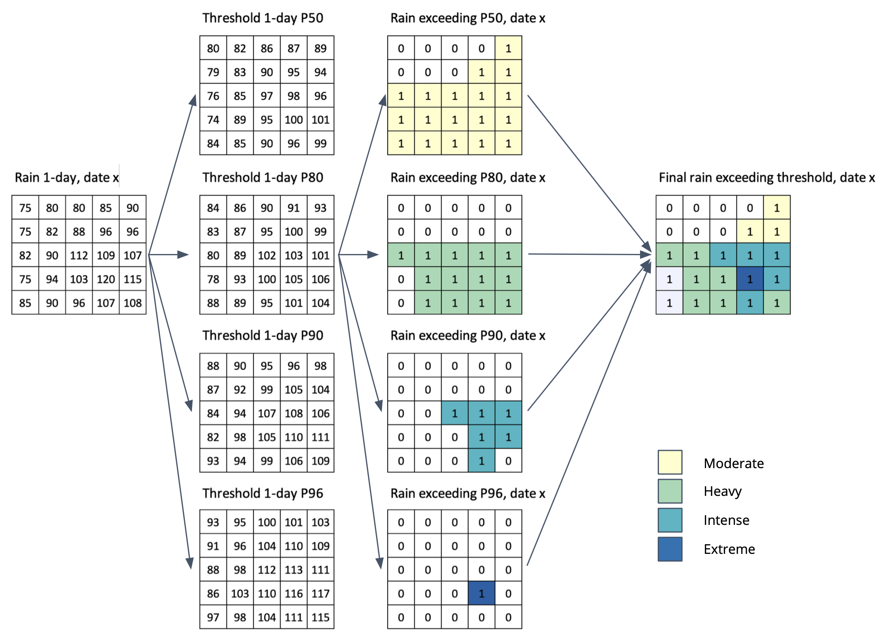

Extreme rainfall calculation
Rainfall exceeding the threshold
Extract rainfall exceeding the threshold for 1 to 5-days
-
1-day
-
IF RAIN-A1day > Threshold_P50, THEN extract to new file RAIN-Bp50 and classified as Moderate
#ffffcc -
IF RAIN-A1day > Threshold_P80, THEN extract to new file RAIN-Bp80 and classified as Heavy
#a1dab4 -
IF RAIN-A1day > Threshold_P90, THEN extract to new file RAIN-Bp90 and classified as Intense
#41b6c4 -
IF RAIN-A1day > Threshold_P96, THEN extract to new file RAIN-Bp96 and classified as Extreme
#225ea8 -
Combine all result RAIN-Bp50 - RAIN-Bp80 - RAIN-Bp90 - RAIN-Bp96 into single file RAIN_B with information on rainfall value and class, with condition:
if in certain location (x,y) experience more extreme categories (P50<P80<P90<P96), the area is excluded in other less extreme categories.
-
-
Repeat the process for 2-days to 5-days period.
Picture below illustrate above step.

Will it trigger a flood?
Calculate the probability
Using linear regression formula \(\(aX+b\)\), where a = Slope, X = rainfall and b = Intercept, then calculate:
$$gi = (Slope_Kday_Lmonth * Rainfall_Kday) + Intercept_Kday_Lmonth$$
$$pi = 1/(1+EXP(-gi))$$
Where:
- K = class of the alert (1 to 5 days)
- L = month of the rainfall
Example: 1-day simulation, Month = 12
gi = Slope_1day_12Dec * Rainfall_1day + Intercept_1day_12Decpi = 1/(1+EXP(-gi))
Classified pi into 3 class:
- IF pi >= 0.8, THEN High (Likelihood Class 3)
- IF pi >= 0.6, THEN Moderate (Likelihood Class 2)
- IF pi < 0.6, THEN Low (Likelihood Class 10
Determine the alert level
Use matrix in page Find areas at risk of flooding to determine the level of Alert
Repeat the process for all rainfall class (2 to 5-days period), and for all data type: Historical and Near Real Time, Final, Late and Early Run.
Expected output
Information by pixel on: ID, Lon, Lat, A1CODE, A1NAME, A2CODE, A2NAME, Rainfall, RainClass, LikelihoodClass, ALERT
Update frequency
Historical
-
Final run. Daily update.
Final run data will update every month with lag for 3-month. If the new Final run data available, all information about rainfall and product in Late run will replace using this data.
-
Late run. Daily update. The lag time around 14-23 hours from release date.
Near-real time
-
NRT, Final run. 6-hours update. Final run data will update every month with lag for 3-month. If the new Final run data available, all information about rainfall and product in Early run will replace using this data.
-
NRT, Late run. 6-hours update. The lag time around 4-11 hours from release date.
Forecast
- Forecast. 6-hours update, with forecast data available upto 5 days ahead.
Symbology
Rainfall exceeding the threshold
- Rain Class 1: Moderate,
#ffffcc - Rain Class 2: Heavy,
#a1dab4 - Rain Class 3: Intense,
#41b6c4 - Rain Class 4: Extreme,
#225ea8
Likelihood of triggering flood
- Likelihood Class 1: Low,
#f7fcb9 - Likelihood Class 2: Moderate,
#addd8e - Likelihood Class 3: High,
#31a354
Extreme rainfall-triggering a flood (Flood alert)
- No alert: Green,
#a5d342 - Alert 1 - 3: Yellow,
#fceca9 - Alert 4 - 6: Orange,
#f4b45f - Alert 7 - 9: Red,
#de4b31